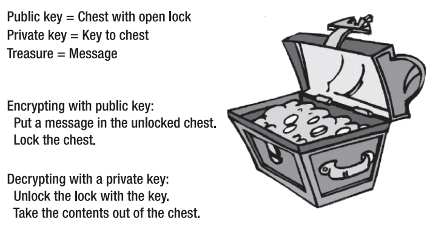
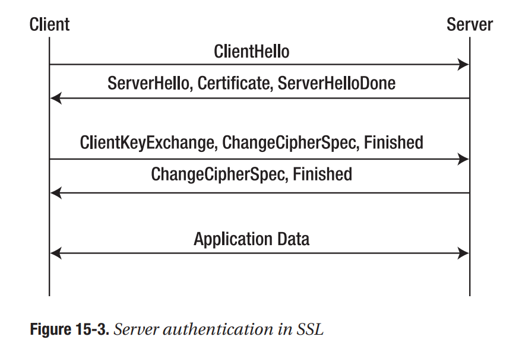

Foundations of Security
What Every Programmer Needs to Know
Contents
- Part 1 Security Design Principles
- 1 Security Goals
- 2 Secure Systems Design
- 3 Secure Design Principles
- Part 2 Secure Programming Techniques
- 5 Worms and Other Malware
- 6 Buffer Overflows*
- 7 Client-State Manipulation
- 8 SQL Injection*
- 9 Password Security*
- 10 Cross-Domain Security in Web Applications*
- Part 3 Introduction to Cryptography
- 12 Symmetric Key Cryptography
- 13 Asymmetric Key Cryptography
- 14 Key Management and Exchange
- 15 MACs and Signatures
* Explicitly part of the TDT4237 curriculum.
1 Security Goals
1.1 Security is Holistic
1.2 Authentication
Authentication is the act of verifying someone’s identity. Three common types of methods:
- something you know (passwords),
- something you have (phone, cards, keys), and
- something you are (biometrics)
1.3 Authorization
Authorization is the act of checking whether a user has permission to conduct some action. Common techniques:
- Access Control Lists (ACLs) (Simple or Role-Based)
- Access Control Models
- Mandatory Access Control (MAC)
- Discretionary Access Control (DAC)
- Role-Based Access Control (RBAC)
- The Bell-LaPadula Model
1.4 Confidentiality
The goal of confidentiality is to keep the contents of a transient communication or data on temporary or persistent storage secret. Usually, some kind of encryption technology is used to achieve confidentiality.
1.5 Integrity
Data integrity ensures that data is identically maintained during any operation, such as transfer, storage, or retrieval.
- Cyclic Redundancy Checks (CRCs)
- Message Authentication Codes (MACs)
1.6 Accountability
The goal of accountability is to ensure that you are able to determine who the attacker or principal is in the case that something goes wrong or an erroneous transaction is identified.
- Logging, with timestamps
1.7 Availability
An available system is one that can respond to its users' requests in a reasonable timeframe.
- Denial-of-service (DoS) attacks
- Add redundancy to eliminate any single point of failure.
- Impose limits on the amount of disk space that each user can use
1.8 Non-repudiation
The goal of non-repudiation is to ensure undeniability of a transaction by any of the parties involved. Non-repudiation protocols end up being expensive to implement, and are not used often in practice.
- Trusted third parties
- Digitally signed statements (receipts) may be generated
2 Secure Systems Design
2.1 Understanding threats
Defacement is a form of online vandalism in which attackers replace legitimate pages of an organization’s web site with illegitimate ones.
Infiltration is an attack in which an unauthorized party gains full access to the resources of a computer system (including, but not limited to, use of the CPUs, disks, and network bandwidth).
Phishing is an attack in which an attacker (in this case, a phisher) sets up a spoofed web site that looks similar to a legitimate web site.
Pharming (DNS cache poisoning) is similar to phishing, but is able to use the real URL. The attacker achieves this by interfering with the DNS address translation. This is however detectable by SSL in most cases.
Insider Threats are threats posed by employees with insider access to the system. This may be mitigated by a separation of privilege.
Click fraud abuses pay-per-click advertising. In one type, an advertiser will click a competitor's ad with the intention of "maxing out" their competitor's budget. In another, a web site publisher will click on ads shown on their own site in an attempt to receive the revenue share for those clicks.
In one type of DoS attack, the attacker sends so many packets to a web site that it cannot service the legitimate users that are trying access it, making it unavailable.
Data theft and data loss are threats to confidentality and integrity. Data loss may be mitigated by data backups.
2.2 Designing-In Security
Designing security into a software application means that one should keep security in mind while building it, starting with its requirements and design. Experience has shown that it is very hard to add on security later. Examples are authentication in Windows 98 and The Internet. When security is added as a response to a certain type of attack, the adversary often finds way to respond back by working around the added security measures.
A turtle shell architecture is one in which an inherently insecure system is “protected” by another system that attempts to mediate accesses to the insecure system. Firewalls are such an example.
2.3 Convenience and Security
Security may come at a cose of convenience, an example is the requirement of complex passwords. A good security technology will provide a security benefit at only a slight inconvenience to users.
2.5 Security in Software Requirements
One way to start “baking” security into your software is to define concrete, measurable security goals in software requirements documents.
Security vulnerabilities very often occur due to bad error handling. Requirements documents that do not specify how to handle errors properly usually result in software that handles errors in some arbitrary way.
When test plans are generated, there should not only be test cases that test the functional correctness of the software, but there should also be test cases generated for security. S security test case tests that a software feature does not malfunction when provided improper or malicious input.
2.6 Security by Obscurity
Security by obscurity does increase the amount of effort an adversary has to go though in order to attack a system. However it is certainly not sufficient to prevent a determined attacker.
Binary files are hard for average humans to understand and read. However, an attacker can use debugging and other types of tools to disassemble, decompile, and even reverse engineer the executable. The attacker’s process of systematically trying various input strings that may result in an exploit is called fuzzing.
- Don’t “Roll Your Own” Cryptography
- Don’t Hard-Code Keys
- Don’t Forget Code Reuse (use standard encryption algorithms)
2.7 Open vs. Closed Source
One approach that some companies have attempted to use to increase the security of their software is to make it open source. However, you won't know the qualifications of the people looking at your code, or their intentions. Choosing to keep an application open or closed source should be a business decision - the actual security of the application is dependent upon other factors.
2.8 A Game of Economics
For every dollar that the potential victim spends on security measures, how many dollars would the attacker have to spend to “break” into the system?
Security is about risk management. You want to invest enough in security technologies to minimize the risk that the attacker is going to be successful. (Here, we are assuming that attackers are rational economic agents, which may not always be the case.)
2.9 "Good Enough" Security
We do not think it makes sense to put security sufficient for version five of your software in the alpha version. Security can be treated similarly to extensibility.
3 Secure Design Principles
3.1 The Principle of Least Privilege
The principle of least privilege states that a user or computer program should be given the least amount of privileges necessary to accomplish a task.
3.2 Defense-in-Depth
The point of defense-in-depth, also referred to as redundancy is to not rely on any one defense to achieve security. Avoid a single point of failure (SPOF). Some mechanisms may prevent attacks, others may detect when attacks are taking place, manage attacks while they are in progress, or help you recover from the attack.
3.3 Diversity-in-Defense
Diversity-in-defense is related to defense-in-depth, but is about using multiple heterogeneous systems that do the same thing. For example, one could back up data on machines that use different operating systems. If a virus attacks Microsoft Outlook, it will be able to corrupt all the computers in a corporation that are running Microsoft Windows. This does come at a cost: by using more than one OS, the IT staff may come under the burden of having to be experts with more than one technology, and will also have to monitor and apply software patches to multiple technologies.
3.4 Securing the Weakest Link
A system is only as strong as its weakest link. The weakest link is the part of a system that is the most vulnerable, susceptible, or easiest to attack. Examples are
- weak passwords
- people
- implementation vulnerabilities
3.5 Fail-Safe Stance
Fail-safe stance involves designing a system in such a way that even if one or more components fail, you can still ensure some level of security. For example, if a firewall ever fails, it should deny access by default and not let any traffic in. Although inconvenient, the information system protected by the firewall will stay secure.
3.6 Secure by Default
When you design a system, it should, by default, be optimized for security wherever possible. From a security standpoint, the more features that are built into a piece of software, the more susceptible it is going to be to an attack. Therefore, on should not enable non-vital services by default.Such hardening of the initial configuration has for example helped reduce the security threat posed by worms in Windows.
Whitelists are generally more secure than blacklists.
3.7 Simplicity
Complex software is likely to have many more bugs and security holes than simple software. Code should be written so that it is possible to test each function in isolation. A simpler design and fewer lines of code can mean less complexity, better understandability, and better auditability.
3.8 Usability
For a software product to be usable, its users, with high probability, should be able to accomplish tasks that the software is meant to assist them in carrying out. Interaction designers and usability engineers should be brought in at the start of the project to architect the information and task flow to be intuitive to the user.
Regarding the interaction between usability and security:
- Do not rely on documentation (most user won't read it)
- Secure by default (security features are rarely manually enabled)
- Remember that users will often ignore security if given the choice
3.9 Security Features Do Not Imply Security
Based on how much testing you have done and what you have tested for, you may be able to provide your management with a risk assessment.
However, in general, you don’t really know that any piece of code is actually secure. You either know that it is not secure because you found some security bugs that you have not fixed yet, or it is inconclusive as to whether it is secure.
An attacker may often need to find only one flaw or vulnerability to breach security. The designers of a system have a much harder job—they need to design and build to protect against all possible flaws if security is to be achieved.
5 Worms and Other Malware
5.1 What is a Worm?
A worm is a type of a virus. A virus is a computer program that is capable of making copies of itself and inserting those copies into other programs. A worm (write once, read many) is a virus that uses a network to copy itself onto other computers.
5.2. An Abridged History of Worms
Example: The Morris Worm
- How it spread
- It attempted to use a buffer overflow vulnerability in the finger daemon server,
- It took advantage of the debug mode in sendmail, and
- It tried to remotely log into hosts using common usernames and passwords.
- What we learned
- Diversity is good. The Morris worm took advantage of vulnerabilities in UNIX servers.
- Large programs are particularly vulnerable to attack. The sendmail program is very large and has lots of lines of code.
- The importance for users to choose good passwords
5.3 More Malware
Here are some other types of malware that you need to be aware of:
Rootkits: A set of impostor operating system tools that are meant to replace the standard version of those tools such that the activities of an attacker that has compromised the system can be hidden. Once a rootkit is successfully installed, the impostor version of the operating system tools becomes the default version.
Botnets: Once an attacker compromises a machine, it can be added to a network of software robots used to control large numbers of machines at once. For example, to launch a DDoS attack. If an attacker installs a rootkit on each machine in a botnet, the existence of the botnet could remain quite hidden.
Spyware: Spyware is software that monitors the activity of a system and some or all of its users without their consent. For example, spyware may collect information about what web pages a user visits, what search queries a user enters, and what electronic commerce transactions a user conducts.
Keyloggers: A keylogger is a type of spyware that monitors user keyboard or mouse input and reports some or all such activity to an adversary. Keyloggers are often used to steal usernames, passwords, credit card numbers, bank account numbers, and PINs.
Adware: Adware is software that shows advertisements to users. In some cases, adware provides the user with the option of paying for software in exchange for not having to see ads.
Trojan horses: A Trojan is software that claims to perform one function but performs an additional or different function than advertised once installed.
Clickbots: A clickbot is a software robot that clicks on ads to help an attacker conduct click fraud. Some clickbots can be purchased, while others are malware that spreads like worms and are part of larger botnets.
6 Buffer Overflows
A buffer overflow vulnerability allows an attacker to inject code into an already running program and then have the program start running the attacker’s code. While buffer overflow attacks are preventable, they continue to be a common vulnerability.
6.1 Anatomy of a Buffer Overflow
When overflowing a buffer, the program might overwrite the return address of the current function. This may be exploited by an attacker, enabling them to call an arbitrary function, e.g. openVault() (if they have had access to the source/binary and know what address to point to). The user input provided by the attacker is often called an attack string. It is also possible to include arbitrary executable code in the attack string.
6.2 Safe String Libraries
6.3 Additional Approaches
- StackGuard (compiler technique)
- Static Analysis Tools
6.4 Performance
The performance impact of all of these approaches is usually a small price to pay to ensure that an attacker cannot take control of your software!
6.5 Heap-Based Overflows
Heap-based buffer overflows can be prevented in the same way that stack-based buffer overflows can be - in both cases, it is critical that memory is not written to beyond the bounds of a buffer.
6.6 Other Memory Corruption Vulnerabilities
In a memory corruption vulnerability, the attacker takes advantage of a programmer’s error in memory management.
- Format string vulnerabilities
- Integer overflows
7 Client-State Manipulation
Client-state manipulation is an attack that can occur due to unvalidated input. To be secure, web applications should not trust clients, and should validate all input received from clients.
7.1 Pizza Delivery Web Site Example
The process by which session-ids are provided to clients, associated with state, verified, and invalidated is often referred to as session management.
Problem: User may change pizze price
- Solution 1: Authoritative State Stays at Server
- Solution 2: Signed State Sent to Client
- One caveat to using a signature-based approach is that the entire transaction state must be signed
7.2 Using HTTP POST instead of GET
With GET, query params are exposed in the URL - which is often shared. With a POST, these values are not shared as easily.
7.3 Cookies
An alternative to using HTTP POST to maintain state across HTTP requests would be to use cookies. A cookie is a piece of state that is maintained by a client.
You must be careful when using cookies since they are stored by the browser. If Alice uses your web site and does not explicitly log out (or you do not expire the session-id after some time period), there may be an additional security risk.
7.4 JavaScript
While JavaScript can be used to make the web page more interactive for the client, any data validation or computations done by the JavaScript cannot be trusted by the server. The computations must be redone on the server to ensure security.
8 SQL Injection
In general, command injection vulnerabilities can arise when untrusted data is inserted into a query or command. Specially crafted malicious input can cause the interpreter to misinterpret part of the supplied data as a command, or otherwise alter the intended semantics.
In addition to SQL queries, this issue can occur if an application executes shell commands, makes queries to an LDAP server, uses XPath expressions to extract data from an XML document, interprets untrusted data as part of an XSLT style sheet, and so forth.
8.1 Attack Scenario
SQL injections are performed by inserting malicious user input into an SQL query.
In a second order SQL injection, data stored in the database is later used to conduct SQL injection. An attacker might for example choose the username admin' --. Therefore, you should also escape input that have been stored in the database!
8.2 Solutions
- Blacklisting Does Not Work
- Whitelisting-Based Input Validation
- Escaping
- In general, you should not attempt to transform dangerous input characters to attempt to turn a potentially dangerous input string into a sanitized one.
- Prepared Statements and Bind Variables
Mitigating the Impact of SQL Injection Attacks
- Prevent Schema and Information Leakage
- Limiting Privileges
- Encrypting Sensitive Data Stored in the Database
- Hardening the Database Server and Host O/S
- Applying Input Validation
9 Password Security
9.1 A Strawman Proposal
9.2 Hashing
What you need a one-way encryption. If you store only one-way encrypted passwords in the password file, even if an attacker were to get hold of the password file, he would not be able to decrypt any of the users' passwords. This is accomplished by a hash function.
Some commonly used hash functions are SHA-1 and MD5, however there have been recent attacks against them. It is advisable to use hash functions such as SHA-256 and SHA-512 instead.
9.3 Offline Dictionary Attacks
An attacker can easily build a dictionary of words, common street names, common names of companies, and so forth; and use such a dictionary to mount an attack.
If the attacker knows that you are using the SHA-256 hash function to store one-way encrypted versions of passwords, the attacker can iterate through all the words in a dictionary, compute the SHA-256 hashes of them, and compare.
The attack is called an offline dictionary attack because the attacker is not required to actually try username and password combinations online against a real system to conduct her attack, as she has possession of the password file.
9.4 Salting
Salting is the practice of including additional information in the hash of the password.
The attacker now needs to try combinations of dictionary words concatenated with salts to look for matches in the password file. Now, the task of cracking any user password is now about as difficult as cracking the password of a specific user.
9.5 Online Dictionary Attacks
In online dictionary attacks, the attacker actively tries username and password combinations using a live, running system, instead of, say, computing hashes and comparing them against those in some acquired password file. This allows the host (you?) to monitor the attacker's password guessing. Subsequent login attempts from suspicious IPs can be denied, and additional steps can be taken to mitigate the online dictionary attack.
9.6 Additional Password Security Techniques
- Strong Passwords
- "Honeypot" Passwords
- Password Filtering
- Aging Passwords
- Pronounceable Passwords
- Limited Login Attempts
- Artificial Delays
- Last Login
- Image Authentication
- One-Time Passwords
10 Cross-Domain Security in Web Applications
10.1 Interaction Between Web Pages from Different Domains
With same-origin-policy, scripts can only access properties (including cookies, and DOM objects and their attributes) associated with documents from the same origin as the origin of the document with which the script is associated. The origin of a document is defined by the protocol (e.g. HTTP or FTP), hostname, and port of the document's URL.
Cookies are divided into two classes with respect to how long they are cached by the browser: non-persistent are cached (in memory) until the browser is closed, while persistent cookies persist (on disk) until the indicated expiry time.
With the HTTP authentication alternative, it is very difficult to implement a reliable session timeout mechanism.
10.2 Attack Patterns
// TODO: Clean up
XSRF: It is worth noting that due to the same-origin policy, the attacker’s malicious page cannot read any data related to Alice’s account; rather, it is possible for him to blindly cause Alice’s browser to make a write request to our application and cause a server-side state change related to Alice’s account.
XSSI:
Cross-Site Scripting (XSS): An attacker is able to inject a script tag into the application. If the data is not escaped, the script will run. This can be used to steal data such as cookies or perform actions in the user's place.
The term reflected XSS is commonly used to describe situations such as the first example in this section, in which the victim is lured into making a request to the vulnerable web application, and script is injected via parameters of that request and returned (reflected) immediately as part of the resulting response. In contrast, situations in which injected script is delivered to victim users some time after it was injected into the system (and is stored somehow in the intervening period) are referred to as stored XSS.
10.3 Preventing XSRF
- Inspecting Referer Headers
- Validation via User-Provided Secret
- Validation via Action Token
10.4 Preventing XSSI
- Authentication via Action Token
- Restriction to POST Requests
- Preventing Resource Access for Cost Reasons
10.5 Preventing Cross-Site Scripting (XSS)
- Output sanitation
many more pages..
12 Symmetric Key Cryptography
12.1 Introduction to Encryption
Substitution ciphers are easy for attackers to break using basic frequency and statistical analysis.
An n-bit block cipher encrypts n bits of plaintext at a time, and produces an n-bit result. Parity bits are extra bits that add redundancy to detect if the key has been corrupted.
DES is a 64-bit block cipher with a64 bit key with 8 parity bits. From a security standpoint, DES gives 56 bits of security, since the other bits are just for integrity checking.
Triple DES encryption consists of taking an input message, m, encrypting with the first key (k1), decrypting the resulting message with the second key (k2), and then encrypting that message with the third key (k3). Triple DES provides existing DES users with an easy upgrade path.
AES is a replacement for DES and Triple DES that provides security with larger keys and faster execution time. Fifteen different ciphers were proposed by cryptographers from all over the world, and conferences were held over the course of a three-year period, in which the strengths and weaknesses of the proposed ciphers were debated with regard to security, speed, memory requirements, and other hardware and software implementation considerations.
To encrypt a 1-MB document, we could take each of these 64-bit blocks of plaintext input and independently run each of them through DES to produce 16,384 64-bit blocks of ciphertext. This technique is called Electronic Code Book (ECB) mode encryption. The problem with ECB is that it is likely that some of the 64-bit plaintext blocks are repeated many times in the 1-MB document. ECB leaks information about the structure of the document to the attacker.
In cipher block chaining (CBC) mode encryption, we can avoid having patterns in ciphertext by XORing the previous block of ciphertext with the current plaintext block before encrypting to produce the next ciphertext block,
12.2 Stream Ciphers
In a stream cipher, one byte of plaintext is encrypted at a time, rather than 64, 128, or more bits at time. Stream ciphers are, in general,much faster than block ciphers. In a stream cipher, an infinite sequence of random bits is generated for use as the key, so the key bits are never reused. Stream ciphers attempts to approximate a theoretical encryption scheme called a one-time pad.
A one-time pad is a cipher in which plaintext is XORed with a random stream of bits of the same length as the plaintext. The scheme has perfect secrecy meaning that under a brute-force attack, every possible decryption is equally likely. A one-time pad is named as such because the key should be used exactly once. If an attacker is able to get one bit of plaintext and one bit of corresponding ciphertext, the attacker could simply XOR the two together to recover the key bit!
RC4 is a very popular stream cipher that approximates a one-time pad. Since it is impractical to have a key that is as long as the plaintext itself, RC4 uses a fixed-size key as a “seed” that is used to generate an infinite stream of key bits.
While RC4 provides fast performance, you should remember the following if you decide to use it: RC4 keys should never be used more than once, a suitable number of initial bytes of the key stream should be discarded, and a MAC should be used to protect the integrity of the ciphertext transmitted.
12.3 Steganography
13 Asymmetric Key Cryptography
13.1 Why Asymmetric Key Cryptography?

13.2 RSA
RSA is the most widely known and used asymmetric cipher. It is used in a variety of different protocols in the world of computer security. The security of the algorithm depends on the difficulty of factoring large prime numbers. If it is difficult to factor large prime factors, it will be hard to break the mathematical properties of the algorithm. Common key sizes that are used with RSA are 1024, 2048, and 4096 bits. Since RSA is fundamentally different than any other encryption algorithm, these key sizes do not have a direct relation to the key sizes of other algorithms, such as AES or Triple DES.
13.3 Elliptic Curve Cryptography (ECC)
The security of Elliptic Curve Cryptography is based upon the difficulty of the elliptic curve discrete logarithm problem. It allows you to do public key operations using much smaller keys than RSA.
13.4 Symmetric vs. Asymmetric Key Cryptography
Asymmetric key encryption solves the problem of agreeing on a shared private key. However, symmetric key encryption is more efficient. RSA ends up being about one thousand times slower than DES.
13.5 Certificate Authorities
A certificate authority (CA) is a trusted third party that verifies people identities and binds it to their public keys. A CA is also responsible for revoking keys and certificates, e.g. if a private key is lost or compromised.
13.6 Identity-Based Encryption (IBE)
With Identity-Based Encryption, the public key is the identity (e.g. email address). This solves the problem of verifying public keys. To replace a compromised key, we simply add the current date to the email address.
13.7 Authentication with Encryption
Asymmetric key encryption can be used to authenticate. If Alice encrypts a nonce (some random number) with Bob's public key, Bob can prove his identity by decrypting it with his private key and sending the nonce back, as only he is able to decrypt the message.
14 Key Management and Exchange (skip this?)
14.1 Types of Keys
14.2 Key Generation
14.3 Key (Secret) Storage
14.4 Key Agreement and Exchange
15 MACs and Signatures
A message authentication code (MAC) is a sequence of bits that can be attached to a message to verify where it originated and that it has not been tampered with.
15.1 Secure Hash Functions
A secure cryptographic hash function takes as input some (potentially large) string . It produces a message digest, , that has a few properties:
- Efficiency: It should not take a lot of computational time or CPU cycles to compute even for a potentially large message.
- Pre-image resistance: Given , it should be computationally infeasible to determine .
- Collision resistance: It is computationally infeasible to find two distinct input messages with the same hash.
Two real-world examples of hash functions that are commonly used in building security protocols are MD5 and SHA-1.
15.2 Message Authentication Codes (MACs)
MACs can be used to determine if a message originated from a principal that has possession of a secret key. Don’t use the same keys for encryption and MACs!
// TODO: Shorten the following
In particular, Alice and Bob may share a key, k, and Alice may use that key to compute a MAC on a message, M, which we denote as t = MAC(M,k). Alice can then transmit M and t to Bob. The value t is often referred to as a tag. Let M' be the message that Bob receives and t' be the corresponding MAC that he receives. If Mallory attempts to modify either M or t, Bob can detect any potential tampering by checking whether t' = MAC(M',k). If the equality holds true, it means (with overwhelmingly high probability) that either the message and signature were not tampered with (M' = M and t' = t) or that Mallory knows k.
CBC MACs: One way to construct a MAC is to encrypt the message using a block cipher such as AES in CBC mode. However, it has been shown that MACs based on CBC are not secure in various cases.
HMAC: Instead of attempting to build a MAC based on a block cipher, HMAC uses a secure hash function to compute a MAC. The security of HMAC is dependent upon the strength of the underlying secure hash function that is used. // TODO ?
15.3 Signatures
A signature is a non-repudiable piece of evidence that a principal who has possession of key executed the operation on message . Depending upon the specific context, the signature can have different semantics. Digital signatures are used in SSL and for signing binaries.
We can sign a message by decrypting its hash with a secret key. We want anybody to be able to verify the signature with the public key.
15.4 Attacks Against Hash Functions // TODO: Outdated?
While the use of SHA-1 may continue to be secure for some applications (such as HMAC-SHA-1), it may be acceptable only in the very near future. The attacks against MD5 are more serious, and you should probably transition away from it immediately, if you have not done so already.
An attacker that has access to lots of computational power may be able to use these attacks to construct two new documents that result in the same hash, obtain a digital signature on one of them, and claim that the other was signed.
15.5 SSL
SSL uses both symmetric and asymmetric cryptography, as well as signatures and MACs to provide authentication, confidentiality, and message integrity between a client and a server.
In a full SSL handshake, two round trips are required before the client and server can start exchanging application data.

If you require authentication, confidentiality, and/or message integrity between a client and server, you should strongly consider reusing SSL instead of attempting to build a protocol of your own.